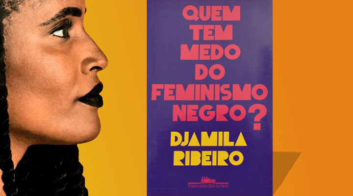

Suas obras
Lugar de Fala

Após a primeira edição chamada "O que é lugar de fala?" em 2017, pela editora Letramento com o objetivo de desmistificar o conceito de lugar de fala, Djamila Ribeiro contextualiza o indivíduo tido como universal numa sociedade cisheteropatriarcal eurocentrada, para que seja possível identificarmos as diversas vivências específicas e, assim, diferenciar os discursos de acordo com a posição social de onde se fala numa edição revista em parceria com a Pólen Livros em 2019.
Quem tem medo do feminismo negro?
Publicado em 2018 pela editora Companhia das Letras, Quem tem medo do feminismo negro? reúne um longo ensaio autobiográfico inédito e uma seleção de artigos publicados por Djamila Ribeiro no blog da revista Carta Capital , entre 2014 e 2017. No texto de abertura, a filósofa e militante recupera memórias de seus anos de infância e adolescência para discutir o que chama de “silenciamento”, processo de apagamento da personalidade por que passou e que é um dos muitos resultados perniciosos da discriminação.
Pequeno manual antirracista
Sua mais recente obra publicada em 6 de novembro de 2019 pela Companhia das Letras, Pequeno manual antirracista trata de temas como atualidade do racismo, negritude, branquitude, violência racial, cultura, desejos e afetos. Em onze capítulos curtos e contundentes, a autora apresenta caminhos de reflexão para aqueles que queiram aprofundar sua percepção sobre discriminações racistas estruturais e assumir a responsabilidade pela transformação do estado das coisas.